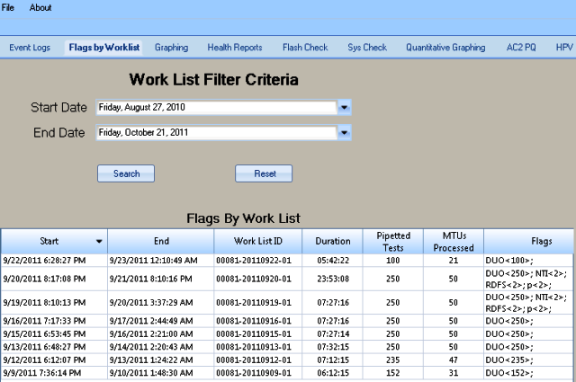
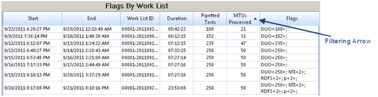
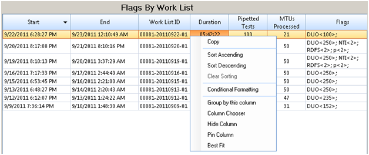
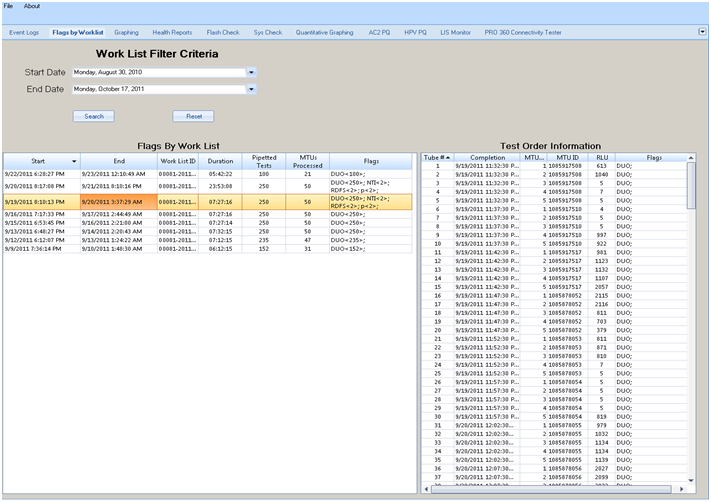
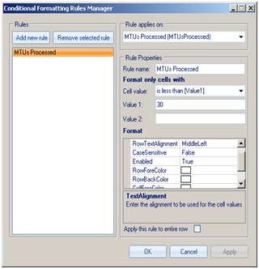
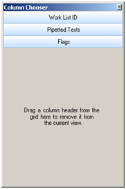

Flags by Worklist
The  Flags by Worklist module provides the ability to analyze test flags from Test Order within a set of work lists. The work lists are retrieved from the DM database and displayed in a master grid by providing a start-date and end-date range. Overall, this module determines the number of pipetted tests per work list by counting the number of sample replicates aspirated. It also determines the number of MTUs processed per work list from the Panther test order table.
Flags by Worklist module provides the ability to analyze test flags from Test Order within a set of work lists. The work lists are retrieved from the DM database and displayed in a master grid by providing a start-date and end-date range. Overall, this module determines the number of pipetted tests per work list by counting the number of sample replicates aspirated. It also determines the number of MTUs processed per work list from the Panther test order table.

| Column | Description |
|---|---|
|
Start |
Local date and time that the work list began to run. |
|
End |
Local date and time that the work list was completed. |
|
Worklist ID |
Worklist Identification. |
|
Duration |
Total time it took to complete a work list. |
|
Pipetted Tests |
Number of pipette tests completed per work list. |
|
MTUs Processed |
Number of MTUs/ Multi-Tube Units processed per work list; 1 MTU = 5 disposable reaction tubes. |
|
Flags |
An error message. |
To display Result and Assay flags by worklist, select a Start Date and an End Date under Work List Filter Criteria, then click Search.
Click Reset to adjust the Start Date and End Date to the past seven days, to end with the current date.
To sort Result and Assay flags by column – click the filtering arrow next to the column head: Start, End, Work List ID, Duration, Pipetted Tests, MTUs Processed. Click the column head to display the arrow.
Click the column head to display the arrow.
Refer to Flags By Work List below:

To open a menu for  copying, sorting, conditional formatting, and grouping Result and Assay flags, right-click the column head.
copying, sorting, conditional formatting, and grouping Result and Assay flags, right-click the column head.
Refer to Flags By Work List below:

To expand Result and Assay flag columns, place the cursor between the columns, hold down the left-click mouse button, and drag the bi-directional arrow in the desired direction.
To move and reorganize Result and Assay flag columns, place the cursor on the column head, hold down the left-click mouse button, and drag the column to the desired location.
To view Test Order Information on the right,  select the desired Work List ID row on the right.
select the desired Work List ID row on the right.

| Column | Description |
|---|---|
|
Tube # |
Tube number. |
|
Completion |
Local date and time that the test order is completed. |
|
MTU Pos |
Multi-Tube Unit position number; 1 MTU = 5 disposable reaction tubes. |
|
MTU ID |
Multi-Tube Unit Identification number. |
|
RLU |
Relative Light Unit, it is a measurement used by Luminometers to quantify light emitted. |
|
Flags |
Error message. |
Test Order Look Up columns can be organized by sorting, conditional formatting, and grouping by right-clicking the column header and selecting the listed functionality.
-
Columns can be sorted in ascending or descending order by right-clicking on the column header and selecting ‘Sort Ascending’ or ‘Sort Descending'.
-
Column sorting can be reversed by right-clicking on the column header and selecting ‘Clear Sorting'.
-
 Conditional Formatting can be done by right-clicking on the column header and selecting ‘Conditional Formatting’. This feature assists with the creation of rules for customized formatting. The following can be controlled: text alignment, row alignment, case sensitive, row color, and cell color.
Conditional Formatting can be done by right-clicking on the column header and selecting ‘Conditional Formatting’. This feature assists with the creation of rules for customized formatting. The following can be controlled: text alignment, row alignment, case sensitive, row color, and cell color.
-
Columns can be grouped by an existing column by right-clicking on the column header and selecting ‘Group by this column’. Grouping can be used to consolidate non-numeric data values into more general group values; these group values can be mapped into a new column within the data set.
-
Columns can be removed from the current view by right-clicking on the column header and selecting
‘Column Chooser’. Drag a column header into the gray area in the ‘Column Chooser’ dialog box to remove the column.
-
Columns can be hidden from the Event Logs screen by right-clicking on the column header and selecting ‘Hide Column’. To unhide the column, right-click on any column header and select ‘Column Chooser,’ then drag the hidden column header back out to the ‘Event Logs’ screen.
-
Columns can be ‘pinned’ so that they remain at the ends of the screen (left or right side); this keeps the column headings visible as the data bar is scrolled up and down. To pin the column, right-click on the column header and select ‘Pin Column’; to reverse this, right-click on the same column header and select ‘Unpin Column'.
-
Columns do not automatically accommodate to fit the information they contain. However, by right-clicking and selecting ‘Best Fit’, the column automatically expands and contracts to fit the data enclosed.
 button at the top of the page to send feedback, comments, or change requests.
button at the top of the page to send feedback, comments, or change requests.